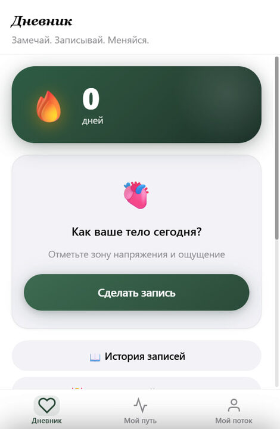
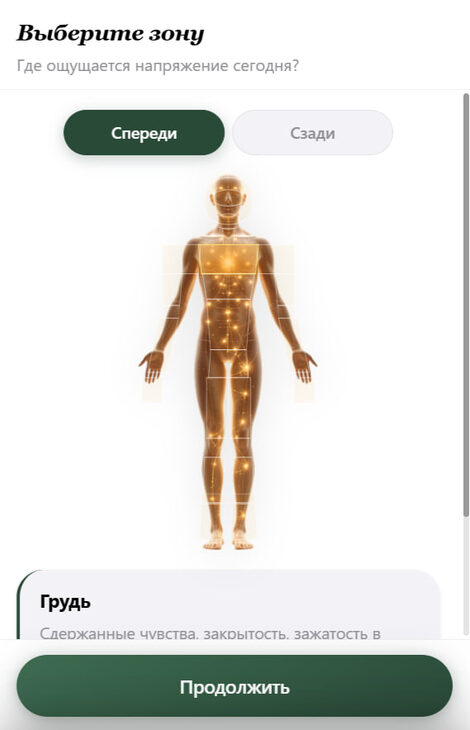
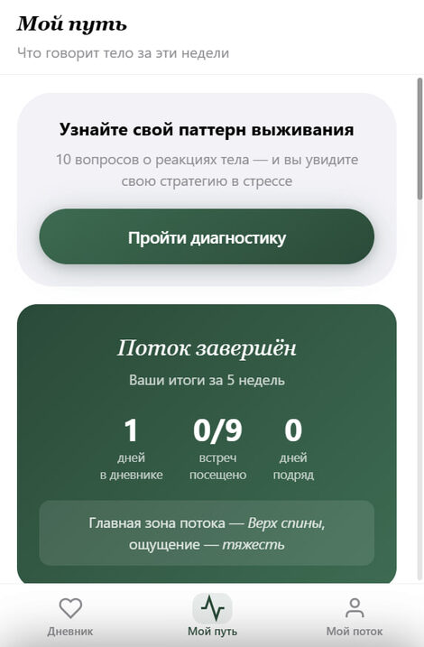

«Тело помнит» — Telegram Mini App
С чего всё началось
«Тело помнит» — онлайн-программа интегративной телесной терапии: 5 недель, 9 живых встреч в Zoom, закрытый поток.
Программа работала, результаты были. Но одна системная проблема съедала их: между сессиями участницы «исчезали». Инсайт со встречи угасал за день-два — и к следующей сессии человек приходил как с чистого листа. Не из-за лени, а из-за отсутствия инструмента, который помогает продолжать работу между встречами.
- Дневник тела не вёлся регулярно — заметки в телефоне, которые никто не читает.
- Триггеры и острые реакции терялись — момент уходил непроработанным.
- Ведущая работала вслепую — без данных о том, что происходит между встречами.
- Не было наглядных доказательств результата для следующих продаж.
- Чат засорялся повторяющимися вопросами: «где ссылка на Zoom?», «во сколько встреча?».
Решение
Telegram Mini App — приложение прямо внутри Telegram. Открывается одной кнопкой в боте: не нужно ничего скачивать, регистрироваться или куда-то переходить — участница уже в Telegram, инструмент там же.
Для тех, кто ещё не в потоке, приложение видно, но закрыто — это создаёт ощущение закрытого клуба и дополнительно мотивирует к покупке.
Что внутри
- Дневник телаИнтерактивная карта тела: нажать на зону, выбрать ощущение, добавить заметку. История записей + напоминания от бота.
- Экспорт дневника в PDFВесь путь по датам, зонам и ощущениям — в один клик. Наглядное доказательство работы.
- Дневник стоп-реакцийФиксация триггеров: что случилось, какая зона отреагировала, интенсивность 1–10, заметка.
- AI-ассистентПроработать острый момент здесь и сейчас, не дожидаясь следующей сессии.
- Диагностика паттерновТест в начале программы: участница узнаёт свой паттерн поведения в стрессе.
- Еженедельный чекин с графикомКороткий чекин о состоянии — динамика по неделям строится автоматически.
- Анкеты до и послеИзмеримый результат: что было до, что изменилось после — для маркетинга и кейсов.
- Отзывы, расписание, чатОтзывы сразу к ведущей; все даты и ссылки на Zoom; связь с потоком и ведущей — из приложения.
Что получила ведущая
- Участницы работают между сессиями — дневник, стоп-реакции, чекины.
- Аналитика по каждой: что болело до и что изменилось после.
- Доказательство эффективности — в цифрах и записях, а не просто «стало лучше».
- Готовый материал для маркетинга — анкеты до/после, отзывы, динамика.
- Чат освободился от повторяющихся вопросов, участницы не теряются между встречами.
Как это выглядит



